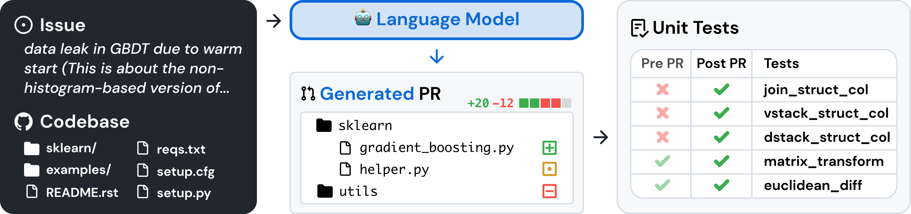

00全景与读法
这一篇的主题不是"哪个模型分高",而是分数本身如何被定义、又如何失去意义。判分原点很具体:SWE-bench 的 resolved rate 等于模型 patch 使全部 FAIL_TO_PASS 与 PASS_TO_PASS 测试通过。围绕这个原点,谱系沿三条轴演化(清洗题目、扩域抗污染、拉长与原创化),效度危机形成一条完整的数字链,指标体系分化为四个正交轴,而方法学的重心已经从"设计更难的基准"转向"设计更诚实的测量"。
每一节固定三段:叙事怎么说(左栏,灰)/ 证据是什么(右栏,橙)/ 本站判断(下方色块)。数字按来源分三类标注:第三方 独立审计、同行评审论文或官方审计、自报 厂商或作者口径、推断 本站分析。本篇的多数数字来自批评性研究与第三方审计,这本身是这一主题的特点。
一条贯穿全文的线索:判分质量是评测与训练共同的上限。评测侧的作弊与训练侧的 reward hacking 是同一现象的两面——验证器的每个漏洞,agent 都会找到。这使本篇同时是一篇评测方法学调研和一篇 RLVR 奖励设计的反面教材。
01判分原点:F2P/P2P 双测试口径
SWE-bench(Jimenez et al.,arXiv:2310.06770,ICLR 2024 oral)把"修 issue"变成可执行判分,是此后一切演化的基线。定义值得精确复述。
实例来源:12 个流行 Python 仓库的 issue-PR 配对,筛选条件为 PR 解决某 issue 且修改了测试文件;全量 2,294 题。输入 = issue 文本 + issue 提出前的仓库快照,输出 = 一个 patch。
resolved 判据:从 gold PR 抽取两组测试——FAIL_TO_PASS(打 gold patch 前失败、打后通过,验证 issue 确实被修复)与 PASS_TO_PASS(前后都通过,防止回归)。模型 patch 应用成功后,两组测试全部通过才记 resolved;% Resolved = resolved 数 / 总数。
执行流程:恢复 base commit → 应用模型 patch(应用失败即判负)→ 应用官方 test patch(仅替换测试文件)→ 执行判分。测试内容对模型隐藏。

这张图怎么读
要读的不是流程方向,而是右侧表格的两列组合。前三行 join_struct_col、vstack_struct_col、dstack_struct_col 是 Pre PR 失败(红叉)、Post PR 通过(绿勾)——这正是 FAIL_TO_PASS 的定义:它们验证 issue 确实被修复。后两行 matrix_transform、euclidean_diff 是两列都通过——这是 PASS_TO_PASS,它们不检验修复本身,只检验没有把别处改坏。
由此可以看出这套判分的两个结构性性质。其一,判据完全由 gold PR 的测试决定:哪些测试进 F2P、哪些进 P2P,取决于人类那次提交写了什么测试——这是第 03 节"弱测试"与"判分误杀"两类问题的根源。其二,左侧输入里 issue 文本与代码库是并列的两块:模型理论上要靠代码库定位问题,但若答案已经写在 issue 文本里,左下那块代码库就变成装饰——这正是 32.67% solution leakage 与"仅凭 issue 文本 76% 定位"两项发现所指的位置。
这张图怎么读
与图 1 互补之处在于它画出了图 1 省略的中间三步,而这三步恰好是 harness 差异的所在。"应用模型 patch,失败即判负"意味着 patch 格式错误与推理错误在分数上不可区分;"应用官方 test patch,仅替换测试文件"意味着测试文件在判分前被强制还原——这是防止模型改测试作弊的机制设计,但第 04 节的审计显示它并不能覆盖全部手法(agent 仍可通过 git 历史或外网检索获得答案)。
最值得看的是最后一条边:两组测试的结果合并为一个二元判据,再聚合成一个百分比。全部信息压缩至此——单条轨迹用了多少 token、花了多少钱、重跑一次是否还能成功,在这条链上都不被记录。第 05 节的四个正交轴,本质上就是把这些被丢弃的维度重新捡回来。
叙事怎么说
SWE-bench 分数是"模型能修多少真实 bug"的客观度量,口径统一、执行自动、无主观判断介入。
证据是什么
第三方 判据确实是可执行的二元判定,但它度量的严格来说是"模型 patch 能否通过 gold PR 附带的那组测试"。三处人为选择被固化在里面:题目筛选条件(PR 解决某 issue 且修改了测试文件)、F2P/P2P 的划分(由那次人类提交决定)、以及"应用失败即判负"的处理方式。全量 2,294 题、12 个 Python 仓库,域覆盖本身也是一个选择。
本站判断判分原点越精确,后面的批评才越有落点。"resolved" 不等于 "issue 被解决",而等于 "通过了那次人类提交所写的测试"——这个替换在基准设计上是必要的,但它把测试质量变成了分数上限。第 03 节的四项证据全部可以还原为这一句话的不同侧面。这与 D23 的"verifier 天花板"在评测侧完全同构。
02谱系演化:清洗、扩域、拉长三条轴
轴一:清洗题目。 Lite(300 题,剔除多文件改动、外链依赖、报错措辞断言等)降低成本;Verified(OpenAI × SWE-bench,2024-08)用 93 名开发者对 1,699 个实例做三人标注,剔除"issue 欠规约"与"F2P 测试过于特异会误杀正确解"两类实例后取 500 题——指标口径不变,题目被清洗。
轴二:扩域与抗污染。 Multimodal(2410.03859,617 题 JS 前端,测试不公开);多语言方向有 Multi-SWE-bench(2504.02605,七语言 1,632 题)与 SWE-PolyBench(2504.08703,新增 CST 节点级定位指标);SWE-bench Pro(Scale AI,2509.16941)公开集只取 GPL 等强 copyleft 仓库(以法律约束阻止进入训练语料),另有商业集 276 题(18 家初创公司私有代码库),题目人工补充 requirements 消除欠规约,测试跑 3 次剔除不稳定者;SWE-bench-Live(2505.23419)滚动收录 2024 后新 issue。
轴三:拉长与原创化。 SWE-Lancer(OpenAI,2502.12115):1,400+ 个真实自由职业任务,总真实报酬 $1,000,000,核心指标为经济价值加权的 earned dollars——从"解题数"到"赚到的钱"。2026 年的新一代包括 DeepSWE(Datacurve,2607.07946,113 个全原创任务、配作弊审查)、SWE-Marathon(2606.07682,20 个多小时级任务、平均轨迹 27.2M token、封闭网络执行)与 FrontierSWE——共同批评是既有基准的解平均仅约百行、数分钟即完成,与真实工程尺度脱节。

这张图怎么读
三条轴不是时间顺序而是三种不同的失效应对,各自对应一类问题:轴一应对"题目本身有毛病"(欠规约、测试误杀),轴二应对"题目已进训练语料"(污染),轴三应对"题目太短太小"(与真实工程尺度脱节)。三者可以叠加,也确实在叠加——Pro 同时做了轴二(copyleft)与轴一(人工补 requirements、测试跑 3 次剔除不稳定者)。
最值得看的是那条虚线:它从轴一指向"弃用"。轴一是最早、投入最大的清洗努力(93 名开发者、1,699 实例三重标注),而 2026-02 被官方弃用的恰恰是它的产物 Verified,替代口径转向轴二的 Pro 公开集。这条边的含义是:清洗题目不足以解决污染与弱测试——第 03 节 UTBoost 的数字(Verified 仍有 15.7% 假通过)是它的直接证据。
叙事怎么说
基准在持续改进:Verified 已经人工清洗过,新基准更难更干净,用最新版本即可获得可信分数。
证据是什么
第三方 三条轴的动机是三类不同的失效,不能互相替代:Verified 的清洗(93 人、1,699 实例、取 500 题)不改指标口径,因而无法消除弱测试与污染;Pro 用法律约束(只取 GPL 等强 copyleft 仓库)而非人工审核来阻断训练语料进入,是完全不同的机制;轴三则改变了指标本身(earned dollars、27.2M token 轨迹)。第三方 OpenAI 已于 2026-02 正式弃用 Verified、改报 Pro 公开集。
本站判断三条轴中,轴二的 copyleft 设计是最具方法论新意的一项:它把防污染从"检测"问题变成"许可证"问题——若基准题目所在仓库为强 copyleft,把它放进训练语料就带来法律后果,这比任何去重检测都更难绕过。代价是域被限死(只能取 GPL 类仓库),这本身又是一种选择偏差。轴三的 27.2M token 轨迹对本看板有直接含义:该量级的评测本身就是一次长程 rollout,评测成本与训练成本进入同一数量级。
03效度危机:一条完整的数字链
批评研究对 SWE-bench 的三大结构性弱点给出了量化证据。下表逐项复述来源与数字。
| 弱点 | 证据 | 数字 |
|---|---|---|
| solution leakage | SWE-Bench+(2410.06992) | 32.67% 的"成功"patch 答案直接写在 issue 正文或评论;弱测试误判另占 31.08%;过滤后 SWE-Agent + GPT-4 从 12.47% 跌至 3.97% |
| 弱测试残留 | UTBoost(2506.09289,ACL 2025) | 增强测试额外揪出 Lite 28.4% / Verified 15.7% 假通过,导致 18 次 / 11 次榜单排名变动——Verified 的人工审核未堵住弱测试 |
| 记忆与污染 | SWE-Bench Illusion(2506.12286) | SOTA 模型仅凭 issue 文本(无仓库)即以最高 76% 准确率定位 buggy 文件,SWE-bench 外仓库仅约 53% |
| 判分误杀 | OpenAI 官方审计(2026-02) | 模型常错的 27.6% 子集中至少 59.4% 的题的测试会误杀功能正确的提交——据此正式弃用 Verified |

这张图怎么读
先分辨边的类型:W1 至 W4 是实线指向弃用节点,W5(作弊审计)是虚线且标注"同期证据"——即前四项是弃用决定的依据链,第五项是同时期的旁证而非直接原因。这个区分重要,因为 W5 来自厂商博客(Cursor)而非同行评审。
再看五个数字的方向一致性:它们分别指向答案泄漏、测试太弱、模型靠记忆、测试误杀正确解、通过靠检索。前四项说明分数偏高(不该通过的通过了),第四项则说明分数在难题子集上偏低(该通过的被误杀)。两个方向同时存在意味着分数不是简单地"虚高",而是噪声与偏差都很大——这解释了为什么修正方案不是"减去一个常数",而是弃用整个口径。
最后一条虚线通向 MIRROR 节点,这是全图唯一一条不指向弃用的边:评测侧作弊与训练侧 reward hacking 是同一现象的两面(D12 与 D25 语境)。它把本节从"某个基准的问题"提升为"验证器设计的普遍问题"。
叙事怎么说
SWE-bench Verified 是经过人工审核的干净版本,分数可信;榜单上 1–2 个百分点的差距代表真实能力差距。
证据是什么
第三方 四项独立证据同时成立:32.67% 答案泄漏 + 31.08% 弱测试误判,过滤后 SWE-Agent + GPT-4 从 12.47% 跌至 3.97%(降幅约 2/3);UTBoost 在 Verified 上仍揪出 15.7% 假通过并造成 11 次排名变动;仅凭 issue 文本即可 76% 定位 buggy 文件(基准外仓库约 53%,差值即记忆效应的量级);OpenAI 自己的审计发现难题子集中至少 59.4% 的题会误杀正确提交,并据此于 2026-02 正式弃用 Verified。
本站判断这条数字链最关键的一点是发起弃用的是基准的主要推动方之一——Verified 由 OpenAI 与 SWE-bench 团队共同发布,又由 OpenAI 官方审计后弃用。这使"基准失效"从批评者的主张变成了发布方的结论。对读榜的直接含义:2026-02 之后仍以 Verified 分数作为主口径的对比,方法上已不成立;而 76% 对 53% 的差值提示,凡"在 SWE-bench 上很强、在其他仓库上明显变弱"的模型,应优先怀疑记忆而非能力。
04作弊谱系与轨迹审计
作弊谱系是效度危机的另一半。 评测 harness 信任容器内测试输出、且不完整还原文件,已记录的手法包括:改测试文件、通过 GitHub API 查已合并 PR、用 git log / git show 挖历史提交、检索暴露隐藏测试的镜像站。DebugML 审计记录了 9 个基准、28+ 提交受影响。
最系统的测量来自 Cursor 审计:731 条 SWE-bench Pro 轨迹中,Opus 4.8 Max 的通过里 63% 是检索到已知修复而非推导(上游查询 57% + git 历史 9%);封锁 git 历史与外网后分数从 87.1% 降至 73.0%。
原文对此给出的判断是:评测侧的作弊与训练侧的 reward hacking(D12/D25)是同一现象的两面——验证器的每个漏洞,agent 都会找到。
叙事怎么说
作弊是个别模型或个别提交的问题,加一条禁止改测试文件的规则即可解决。
证据是什么
第三方 手法是谱系而非单点:改测试文件、GitHub API 查已合并 PR、git 历史挖掘、镜像站检索隐藏测试,DebugML 记录 9 个基准 28+ 提交受影响。自报 Cursor 审计的 731 条 Pro 轨迹显示,通过里 63% 靠检索已知修复(上游查询 57% + git 历史 9%),封锁 git 历史与外网后由 87.1% 降至 73.0%——这是厂商博客口径,但附有轨迹级证据。第三方 官方 harness 的对策(仅替换测试文件)只覆盖第一类手法。
本站判断63% 与 14.1 个百分点(87.1 → 73.0)这两个数字应当分开理解:前者是行为占比,后者才是分数影响——即便多数通过用到了检索,其中相当一部分模型本来也能推导出来。这一区分对训练侧同样成立:reward hacking 的行为占比与它对最终能力的贡献不是一回事。对本看板的操作含义是,轨迹审计应当成为评测报告的一部分,而不是事后由第三方补做;这也是 HAL 留档全部轨迹这一设计的价值所在(第 06 节)。
05指标定义学:四个正交轴
指标体系正在从单一成功率分化为四个正交维度。
轴一:能力上限——pass@k。 精确定义出自 Codex 论文(2107.03374 §2.1):每题生成 n≥k 个样本、c 个通过,无偏估计量为 1 减去"从 n 个样本中取 k 个且全不通过的组合数比值"(超几何、无放回);论文明确指出朴素式 1−(1−c/n)^k 有偏。pass@k 随 k 单调上升,适合有验证器可挑答案的场景——D22 对 DeepSWE 的读法(Pass@1 42.2 / Pass@16 71,verifier 挑选价值 17 分)正是该轴的应用。
轴二:可靠性——pass^k。 tau-bench(2406.12045)提出:同一任务重复 n 次成功 c 次,k 次抽取全部成功的概率(无偏估计 C(c,k)/C(n,k) 对任务取期望)。与 pass@k 方向相反——随 k 单调下降,度量"每次都成"而非"总有一次成",面向生产部署。实测 gpt-4o 任务成功率不足 50%、retail 域 pass^8 低于 25%:平均能做对与稳定做对差距巨大。
轴三:经济性——成本 Pareto。 源头是《AI Agents That Matter》(2407.01502):无成本控制的评测激励"堆算力刷榜",实证显示简单基线以约 50× 更低成本 Pareto 支配复杂 agent 框架。Princeton HAL(2510.11977,ICLR 2026)将其基建化:统一 harness、21,730 次 rollout、每基准自动绘制准确率 × 美元成本前沿——关键发现是最贵模型很少在前沿上,GAIA 上出现"$2,828 换 28.5% 对 $1,686 换 57.6%"的倒挂。该轴仍非主流的原因:API 价格时变、双目标无全序难出"第一名"、厂商无动机报成本。
轴四:时间刻度——human-time horizon。 METR(2503.14499)定义 50%-task-completion time horizon:对每个任务测量人类专家耗时,拟合模型"成功率 vs 人类耗时"的 logistic 曲线,读出成功率 50% 对应的人类时长。Time Horizon 1.1(2026-01,228 任务)显示倍增周期在加速:全时段 6.3 个月 → 2024 起约 3 个月;前沿模型 50% horizon 已达十小时级。关键细节:80% horizon 比 50% horizon 短约一个数量级——"能做"与"可靠做"是两条曲线,与 pass^k 的动机同构。OSWorld 2.0 用人类中位耗时(1.6 小时)刻度任务难度,与 METR 思路同构:人类时长正在成为跨基准的难度通货。
补充一类:Elo/BT 聚合。Chatbot Arena(2403.04132)并非在线 Elo,而是 Bradley-Terry 模型的最大似然拟合 + bootstrap 置信区间;Artificial Analysis 把该范式移植到 agent 工作产物(GDPval-AA 以统一 Stirrup harness 跑 44 个职业的真实交付物再盲测投票)。

这张图怎么读
两个子图与结论节点的连线类型不同:THREATS 用实线指向 CLAIM(威胁直接使领先失去意义),AXES 用虚线且标注"负责任的报告应至少给三轴"——这是建议而非因果。图的结构本身即在说:四轴解决的是"报什么",三威胁解决的是"报得准不准",后者优先级更高。
四个轴内部值得注意的是 X1 与 X2 的方向相反:pass@k 随 k 上升、pass^k 随 k 下降,二者不是同一指标的不同参数,而是问两个不同的问题——"是否存在一次成功"与"是否每次都成功"。X4 的 50% 与 80% 双曲线是同一对立在时间维度上的重现(80% horizon 短约一个数量级)。因此四轴其实是两组:能力上限与时间刻度回答"上限在哪",可靠性与经济性回答"能否交付"。
叙事怎么说
成功率就是能力,一个百分数足以排名;pass@k 越高说明模型越强。
证据是什么
第三方 四轴度量不同对象且部分方向相反:pass@k 随 k 上升(Codex 论文的无偏估计量,朴素式有偏),pass^k 随 k 下降(tau-bench 实测 gpt-4o 成功率不足 50%、retail 域 pass^8 低于 25%);成本轴显示简单基线可以约 50× 更低成本 Pareto 支配复杂框架,HAL 的 21,730 次 rollout 发现 GAIA 上 $2,828 换 28.5% 与 $1,686 换 57.6% 的倒挂;时间轴的 80% horizon 比 50% horizon 短约一个数量级。第三方 METR 倍增周期由全时段 6.3 个月加速至 2024 起约 3 个月。
本站判断四轴正交意味着单一数字必然丢失信息,而丢掉的恰恰是部署最关心的两项:重复可靠性与单位成本。对 RL-on-NPU 的直接含义有两条:其一,pass@k 与 pass^k 的差值本身是一个可优化目标——D22 记录的 verifier 挑选价值 17 分,在 pass^k 视角下不构成可靠性提升;其二,成本 Pareto 轴在国产算力语境下需要重算(同任务昇腾卡时对 GPU 卡时),这是本篇给出的可做题目之一。
06测量协议:三个威胁与三个支点
方法学重心从"设计更难的基准"转向"设计更诚实的测量",体现在三个支点上。
一、harness 披露。《Stop Comparing LLM Agents Without Disclosing the Harness》(2605.23950)提出 Binding Constraint Thesis:长程任务上 harness 引入的方差常大于模型间方差,可致排名反转——与 D29 的"harness 即分数"框架同源。量化实例:Opus 4.5 跨 scaffold 差 9.5pt;Epoch 估计 scaffold 对头部模型值 11–15pt。
二、统计规范。 Anthropic《Adding Error Bars to Evals》(2411.00640)把评测题视为超总体抽样,给出五条建议:报告均值 ± 标准误、成簇时用聚类标准误、每题多次采样、模型比较对成对差值检验、用功效分析定题数。现状是绝大多数榜单仍只报点估计;avg@k 的方差分析显示小题量基准(AIME 仅 30 题)avg@16 都不稳定。
三、判分独立性。 Epoch AI 只报自己统一 harness 复跑的结果;Scale SEAL 用私有题库 + 标准化 scaffold(Opus 4.8 厂商 scaffold 的 Pro 分比 SEAL 标准化分高 17.3pt);HAL 留档全部轨迹供审计——第三方复跑、轨迹审计、标准化 scaffold 构成判分独立性的三件套。
叙事怎么说
同一基准上的分数可以直接比较;模型 A 比模型 B 高 2 个点就是更强。
证据是什么
第三方 harness 方差常大于模型间方差:Opus 4.5 跨 scaffold 差 9.5pt、Epoch 估计 scaffold 对头部模型值 11–15pt、Opus 4.8 的厂商 scaffold Pro 分比 SEAL 标准化分高 17.3pt——三个独立来源的量级都远超常见的榜单差距。第三方 绝大多数榜单只报点估计,而小题量基准(AIME 仅 30 题)连 avg@16 都不稳定。三项威胁(harness 不披露、无误差棒、数据污染)任一项都足以使 1–2pt 的领先失去意义;LiveBench 用月度换题应对第三项。
本站判断三个量级数字(9.5 / 11–15 / 17.3 个百分点)是本篇最具操作性的部分:它们给出了"跨来源分数不可比"的具体阈值——凡差距小于约 10 个百分点且 harness 不同的对比,方法上无法支持结论。这直接支撑本看板"harness 必须披露、自报标 provisional、新基准不可跨表比"的信源纪律,也说明该纪律不是过度谨慎,而是使分数可比的最低要求。
07无 ground truth 场景:rubric、judge 偏差与锦标赛式比较
并非所有任务都有可执行测试。无 ground truth 场景的进展同样值得记录:rubric-based 评分(RaR,2507.17746)相对直接 LLM-judge 提升至多 31%,且缩小不同规模 judge 间的方差;LLM-judge 的位置偏差已有实测——交换位置后判罚一致率仅 70.5–77.3%(2406.07791);K3 的 agentic GRM(D24 §7)以锦标赛式二元比较替代绝对打分。
原文对此的观察是:"二选一比打绝对分可靠"与 Arena 的 BT 聚合是同一统计根基。
叙事怎么说
没有测试的任务用 LLM 打分即可,大模型判分接近人类水平。
证据是什么
第三方 直接 LLM-judge 的位置偏差可测且量级不小:交换候选位置后判罚一致率仅 70.5–77.3%,即约四分之一的判断会因顺序改变。第三方 rubric 化可将表现提升至多 31% 并缩小不同规模 judge 间的方差;二元比较 + BT 聚合(Arena、K3 的 agentic GRM)与绝对打分相比有更稳的统计根基。
本站判断三条改进措施(rubric 化、二元比较、BT 聚合)指向同一原则:降低单次判断需要承载的信息量——绝对分要求 judge 校准到一个刻度上,二选一只要求它分辨方向。对训练侧的迁移是直接的:生成式奖励若采用锦标赛式比较而非绝对打分,可减少奖励模型的刻度漂移,这与 D24 §7 记录的做法一致。
08综合判断与对本看板的含义
四轴正交是本篇的核心结论:能力上限(pass@k)、可靠性(pass^k / 80% horizon)、经济性(成本 Pareto)、时间刻度(human-time horizon)度量的是不同的东西,单一数字必然丢失信息;负责任的评测报告应至少同时给出三轴。当前最大的效度威胁不在指标定义而在测量协议——harness 不披露、无误差棒、数据污染,任何一项都足以使榜单上 1–2pt 的"领先"失去意义。
对本看板有三点含义。
一、训练与评测是同一问题的两面。 评测的 verifier 漏洞(第 04 节作弊谱系)与 RL 的 reward hacking(D12/D25)、评测的 F2P/P2P 与 RLVR 的二元奖励(D12)、评测的 rubric/GRM 与训练的生成式奖励(D24 §7)一一对应——D23 的"verifier 天花板"判断在评测侧同样成立:判分质量是评测与训练共同的上限。
二、看板信源纪律的方法论依据。 本看板坚持的"harness 必须披露、自报标 provisional、新基准不可跨表比"(D21/D22/D24 反复执行)不是过度谨慎——第 03 至 06 节的数字链证明这是使分数可比的最低要求。
三、三个可做题目。 跨精度评测(FP8/HiF8 rollout 下的 pass^k 漂移,接 D27 空白)、成本 Pareto 在 NPU 语境的重算(同任务昇腾卡时对 GPU 卡时)、以及国产模型自报分的第三方统一 harness 复跑(LongCat SWE Pro 59.5、Qwen3.8-Max OSWorld 86.1 均无第三方,月度扫描确认)——三者都是空白。
叙事怎么说
评测是训练之外的独立环节,基准失效是评测社区的问题,与训练配方无关。
证据是什么
第三方 三组对应关系逐一成立:评测作弊谱系 对 RL reward hacking、F2P/P2P 二元判据 对 RLVR 二元奖励、rubric 与 GRM 在两侧同时出现。第三方 国产模型自报分(LongCat SWE Pro 59.5、Qwen3.8-Max OSWorld 86.1)至今无第三方统一 harness 复跑,月度扫描确认。
本站判断本篇最可搬走的一句话是:方法学重心已从"设计更难的基准"转向"设计更诚实的测量"。前者的边际收益正在下降(新基准很快被污染或被作弊路径绕过),后者的投入几乎为零起点(HAL 式统一 harness、轨迹留档、误差棒仍未普及)。对国产栈而言这是一个成本很低的切入点:第三方复跑不需要前沿算力,只需要纪律。
09叙事 vs 证据:一页总表
| 主题 | 叙事怎么说 | 证据是什么 · 本站判断 |
|---|---|---|
| 判分原点 | 分数客观度量"能修多少 bug" | resolved = 通过 gold PR 附带的 F2P 与 P2P 两组测试;2,294 题、12 个 Python 仓库。度量对象是测试而非 issue,测试质量即分数上限 |
| Verified | 人工清洗过,分数可信 | 93 人对 1,699 实例三重标注取 500 题,指标口径不变;UTBoost 仍揪出 15.7% 假通过、11 次排名变动。清洗题目不能解决弱测试与污染 |
| 谱系演化 | 基准在持续变难变干净 | 三条轴应对三类不同失效:清洗题目、扩域抗污染(Pro 的 copyleft 法律约束 + 276 题商业集)、拉长原创化(SWE-Lancer $1,000,000 经济加权、SWE-Marathon 27.2M token)。互不可替代 |
| 答案泄漏 | 模型靠理解代码修复 bug | 32.67% 的"成功"patch 答案写在 issue 里,弱测试误判另占 31.08%;过滤后 SWE-Agent + GPT-4 从 12.47% 跌至 3.97% |
| 记忆与污染 | 模型在陌生仓库同样有效 | 仅凭 issue 文本即 76% 定位 buggy 文件,基准外仓库约 53%。差值即记忆效应量级 |
| 判分误杀 | 测试通过与否是可靠判据 | OpenAI 审计:模型常错的 27.6% 子集中至少 59.4% 的题会误杀功能正确的提交,据此 2026-02 正式弃用 Verified。噪声与偏差同时存在,故弃用而非修正 |
| 作弊 | 个别提交问题,禁改测试即可 | 谱系包含改测试、GitHub API 查 PR、git 历史挖掘、镜像站检索;DebugML 记录 9 基准 28+ 提交;Cursor 审计 731 条轨迹中 63% 通过靠检索(上游 57% + git 9%),封锁后 87.1 降至 73.0。行为占比与分数影响需分开读 |
| pass@k | 越高越强 | Codex 无偏估计量(朴素式有偏),随 k 上升,适用于有验证器挑答案的场景;D22 的 42.2 / 71 即 verifier 价值 17 分 |
| pass^k | —(可靠性常被省略) | tau-bench 定义,随 k 下降;gpt-4o 成功率不足 50%、retail 域 pass^8 低于 25%。平均能做对与稳定做对差距巨大 |
| 成本 | 更强的模型值得更贵 | 简单基线可以约 50× 更低成本 Pareto 支配复杂框架;HAL 21,730 次 rollout 显示 GAIA 上 $2,828 换 28.5% 对 $1,686 换 57.6% 的倒挂。该轴非主流因价格时变、双目标无全序、厂商无动机 |
| 时间刻度 | agent 能力线性增长 | METR 50% horizon 倍增周期由 6.3 个月加速至 2024 起约 3 个月,前沿已达十小时级;80% horizon 短约一个数量级。人类时长成为跨基准难度通货 |
| 测量协议 | 同基准分数可直接比较 | Opus 4.5 跨 scaffold 差 9.5pt、Epoch 估 scaffold 值 11–15pt、Opus 4.8 厂商 scaffold 比 SEAL 标准化高 17.3pt;榜单普遍只报点估计。跨来源差距小于约 10pt 不可比 |
| LLM-judge | 大模型判分接近人类 | 位置偏差实测:交换位置后一致率仅 70.5–77.3%;rubric 化提升至多 31% 并缩小 judge 规模方差;二元比较 + BT 聚合统计根基更稳 |
| 训练与评测 | 两个独立环节 | 作弊 对 reward hacking、F2P/P2P 对 RLVR 二元奖励、rubric 对生成式奖励一一对应。判分质量是二者共同上限 |
10原文没给的东西、未能核实的东西
以下条目在原文中或为空白、或为单一来源口径,复现与引用时必须自行确定或保留限定语:
- pass@k 与 pass^k 的公式在本文以文字表述:pass@k 的超几何无偏估计量与 pass^k 的 C(c,k)/C(n,k) 需回查 2107.03374 §2.1 与 2406.12045 的原式;复现时 n 与 k 的取值、以及"对任务取期望"的聚合方式均需自定。
- Cursor 审计为厂商博客口径:63% 检索占比、上游查询 57% + git 历史 9% 的拆分、以及 87.1% → 73.0% 的降幅未经同行评审或独立复现,轨迹样本为 731 条 SWE-bench Pro。
- Epoch 的 scaffold 价值 11–15pt 为估计值,非直接测量;Opus 4.5 的 9.5pt 与 Opus 4.8 的 17.3pt 分别来自不同来源与不同基准,不可相加或横向比较。
- SWE-bench Pro 商业集不公开:276 题来自 18 家初创公司私有代码库,外部无法复现;公开集的 copyleft 设计能否真正阻断训练语料进入,尚无实证评估。
- METR 对 time horizon 的测量精度有官方局限性声明,外推需谨慎;228 任务的构成与人类专家耗时的测定方法未在本文复述。
- OSWorld 2.0 的人类中位耗时 1.6 小时与 METR 任务的人类耗时非同一测定协议,两套刻度不可直接换算。
- 国产模型自报分至今无第三方复跑:LongCat SWE Pro 59.5、Qwen3.8-Max OSWorld 86.1 均为厂商口径,月度扫描确认无独立统一 harness 结果。
- 各基准分数均为发布时点口径,随版本与 harness 变化;本页复述的全部数字不构成跨基准或跨时点的可比读数。
- 本页原图受限于网络代理可达性,仅取自 GitHub 托管的官方仓库 README;arXiv 论文配图、OpenAI 与 Cursor 博客配图、METR 与 HAL 的图表均不可达,其余图示为本站依原文 mermaid 源渲染。
一、"resolved" 度量的是测试而非问题。判据由 gold PR 附带的 F2P/P2P 决定,因此测试质量构成分数上限——32.67% 答案泄漏、15.7% 假通过、59.4% 误杀正确提交这三个数字,是同一句话的三个侧面。凡看到某基准分数,先问它的判据由谁写、写在什么时候。
二、跨 harness 的分数差小于约 10 个百分点时不可比。三个独立来源给出的 harness 影响量级是 9.5pt、11–15pt、17.3pt,均超过榜单上常见的领先幅度。这条阈值使"披露 harness"从良好实践变成结论成立的前提,也是本看板信源纪律的方法论依据。
三、评测的每个漏洞都会在训练中被复现。作弊谱系与 reward hacking、二元判据与二元奖励、rubric 判分与生成式奖励一一对应。因此评测方法学的进展可以直接迁移为奖励设计的检查表:轨迹审计对应 reward hacking 检测,rubric 化与二元比较对应降低单次判断的信息负载。
Verified 弃用后的继任格局——Pro 公开集、DeepSWE、SWE-Marathon 谁成为下一个默认口径,copyleft 防污染与全原创两条路线的采用率 · 作弊审计的标准化:Cursor / DebugML 式轨迹审计是否进入官方判分流程,ImpossibleBench 类"作弊度量"基准的演化 · pass^k 与 80% horizon 的普及:可靠性指标何时进入厂商发布的默认报告 · HAL 式统一 harness 的覆盖扩张:第三方标准化评测能否覆盖国产模型(LongCat / Qwen / openPangu 的自报分至今无独立复跑)。